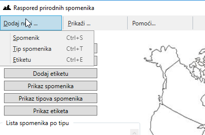
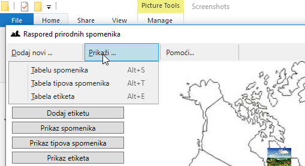
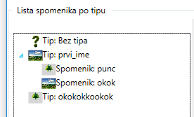
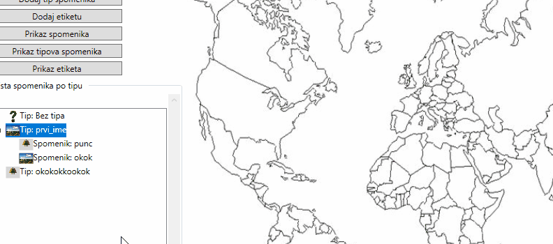
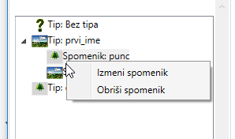
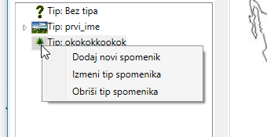
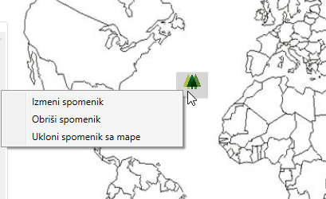
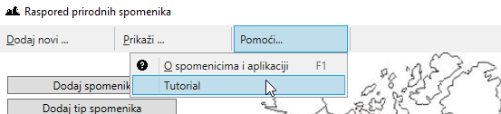

Pocetna Spomenici Tipovi spomenika Etikete Tabela spomenika Tabela tipova spomenika Tabela etiketa
Jednostavna aplikacija za vođenje evidencije o geografskoj distribuciji svetskih prirodnih spomenika, odnosno mesta izuzetne prirodne lepote i značaja.
Sa Wikipedije:
Spomenik prirode ili prirodna baština je element prirode koji je nekim aktom države stavljen pod zaštitu kako bi se očuvale njegove izvorne prirodne vrednosti. Često su to istovremeno i nacionalni parkovi, ali može biti i jedan samostalni objekat, na primer vrlo staro stablo, ili manja površina jasno odvojena od svoje okoline, s izrazitim geološkim svojstvima.Prirodni spomenik ovde predstavlja mesto izuzetne prirodne lepote ili značaja. Može se nalaziti bilo gde na svetu i mora se slagati sa normama i zakonima koje postoje u zakonskim aktima države u kojoj se spomenik nalazi. Spomenik prirode može da bude:
Svaki spomenik je opisan preko: svoje jedinstvene ljudski-čitljive oznake koju unosi korisnik, imena, opisa, tipa, klime u kojoj se nalazi, ikonice, da li je ekološki ugrožen, da li je stanište ugroženih vrsta, da li je u naseljenom regionu ili ne, turističkog statusa, godišnjeg prihoda od turizma, i datuma otkrivanja.
Kao što je već navedeno, spomenik prirode može da bude, ali nije obavezno:
Tip spomenika je opisan preko svoje jedinstvene ljudski-čitljive oznake koju unosi korisnik, imena, ikonice, i opisa. Ikonica je sličica koja se učitava i koja se koristi da se taj tip spomenika označi na mapi.
Etiketa je striktno vezana za aplikaciju i sami birate šta ćete ubacivati. Ne postoje određena pravila kako ćete ih praviti , niti zakonski akti koji to određuju, na Vama je da odaberete najbliže dodatno objašnjenje prirodnog spomenika koje će Vam pomoći u daljem operativnom radu. U okviru aplikacije:
Etikete specificira korisnik i one su opisane svojom jedinstvenom ljudski-čitljivom oznakom koju unosi korisnik, bojom i opisom.
Svaku od navedenih komponenti: spomenici, tipovi, etikete, možete dodavati, menjati i prikazivati
u ovoj aplikaciji.
Dodavanje bilo koje od komponenti se može u grafičkom prikazu postići na dva načina:
Tabelarni prikaz bilo koje od komponenti se može postići na dva načina:
 
Slika: Prikaz pristupa preko kartice
Pored grafičkog načina prikaza postoji i pristup ovim funkcijama i korišćenjem prečica na tastaturi.
Možete jednostavno dodati nove prirodne spomenike i pozicionirati ih na mapi primenom drag n drop tehnike.
Omogućeno je dodavanje novih, ažuriranje i brisanje postojecih spomenika. Svaki spomenik mora posedovati tip koji označava kojoj grupaciji pripada, ili postojati sa beztipskim tipom spomenika, ukoliko niste u trenutku unosa u mogućnosti da unesete odgovarajući tip za ovaj spomenik. Pritom, spomenik može biti obeležen sa više etiketa koje je ukratko opisuju.
Sa leve donje strane nalazi se okvir "Lista spomenika po tipu".
Ovde se nalazi stablo sa hijerarhijom takvom da tip spomenika
sadrži sve spomenike koji spadaju u taj tip.
Da biste otvorili koje spomenike tip spomenika sadrži možete kliknuti na strelicu levo od tipa da biste proširili pogled na spomenike ovog tipa spomenika.

Slika: Prikaz hijerarhije
Prevlačenjem predstave spomenika iz stabla sa leve strane u okviru "Lista spomenika ",
Animacija: prikaz drag n dropa
Desnim klikom na ikonicu spomenika se pojavljuju opcije, na čiji pritisak možemo otvoriti prozor za ažuriranje spomenika i potpuno brisanje spomenika iz aplikacije. Desnim klikom na ikonicu spomenika se pojavljuju opcije, na čiji pritisak možemo otvoriti prozor za dodavanje novog spomenika, ažuriranje tipa spomenika ili potpuno brisanje tipa spomenika iz aplikacije. Takođe postoji mogućnost dvoklika na ikonicu spomenika ili tipa spomenika u okviru stabla za otvaranje dijaloga za njeno ažuriranje.
 
Slika: Prikaz opcija za rad sa spomenikom ili tipom spomenika u stablu
Desnim klikom na ikonicu spomenika se pojavljuju opcije, na čiji pritisak možemo otvoriti prozor za ažuriranje spomenika, uklonjanje njene ikonice ili potpuno brisanje spomenika iz aplikacije. Takođe postoji mogućnost dvoklika na ikonicu spomenika u okviru mape za otvaranje dijaloga za njeno ažuriranje.

Slika: Prikaz opcija za rad sa spomenikom ili tipom spomenika u stablu
Pritiskom na meni "Pomoć" i pritiskom na podmeni "Tutorial" se pokreće tutorial koji korak po korak
omogućuje objašnjenje trenutnog prozora i objašnenje funkcija koje dugme šta pokreće i šta treba ispuniti
u pojedinim poljima.
Takođe omoguće i objašnjenje kako izvršiti unos spomenika na mapu sveta, primenom drag n drop tehnike.

Slika: Pristup tutorialu